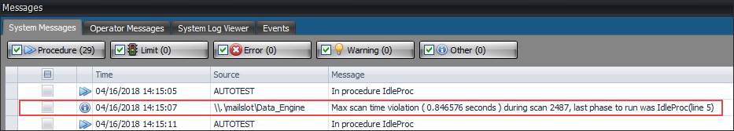

iTest User's Guide
iTest systems with the iTest.XILS license support large channel counts. A solution is considered to have a large channel count when it has between 12,000 and 50,000 channels. If you are using this feature, you must monitor the performance channel counters to ensure channels remain within an acceptable performance range. If the performance of the system decreases or doesn't meet system scan rate, you must decrease the system scan rate or channel count as necessary for acceptable performance.
It is highly suggested that you set EnableScanViolationDetection=TRUE in the powertek.ini file to ensure that you receive a maximum scan time violation message in AutomationPanel's Messages Panel when violations occur. If the voSysExecScanTime performance channel exceeds the scan rate as defined by the SystemScanRateHz powertek.ini setting, you will receive the warning. To improve performance, you must reduce the system scan rate in powertek.ini or reduce the channel count.
Max Scan Time Violation Message

LimitsVer powertek.ini setting must be set to 3.2 or greater.Only the following applications support large channel counts: